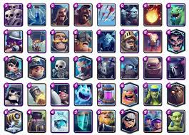

¿Qué son las cartas?
Las cartas son la escencia de este juego, sin estas el juego no tendría sentido. Las cartas son tropas que desplegamos sobre la arena para que luchen y ganemos la partida.
A fecha de mayo de 2024 , hay 111 cartas en el juego, que vienen en cinco rarezas: común, especial, épica, legendaria y campeón. Las cartas tienen como nivel máximo el 15. Todas las cartas son del nivel 11 para torneos.
La carta mas querida entre todas es el "montapuercos", consiste en un hombre musculoso que monta su puerco y que golpea con su martillo para destruir las torres enemigas.